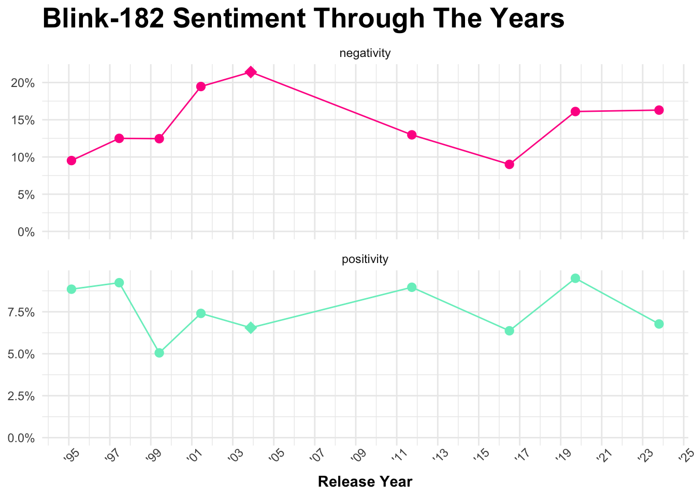
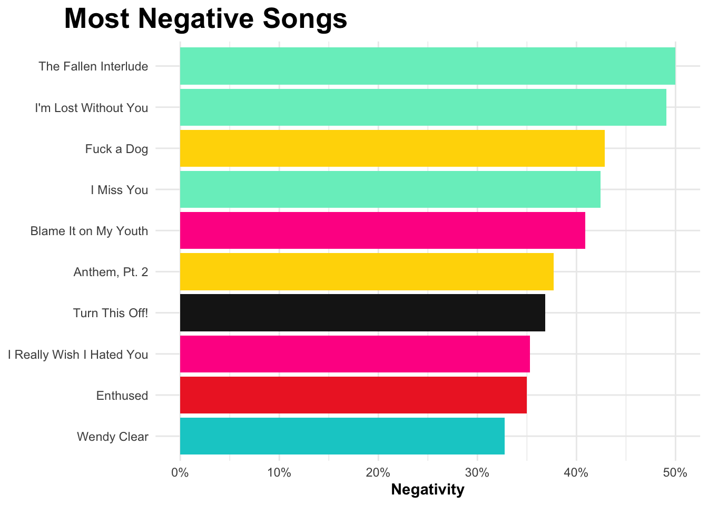
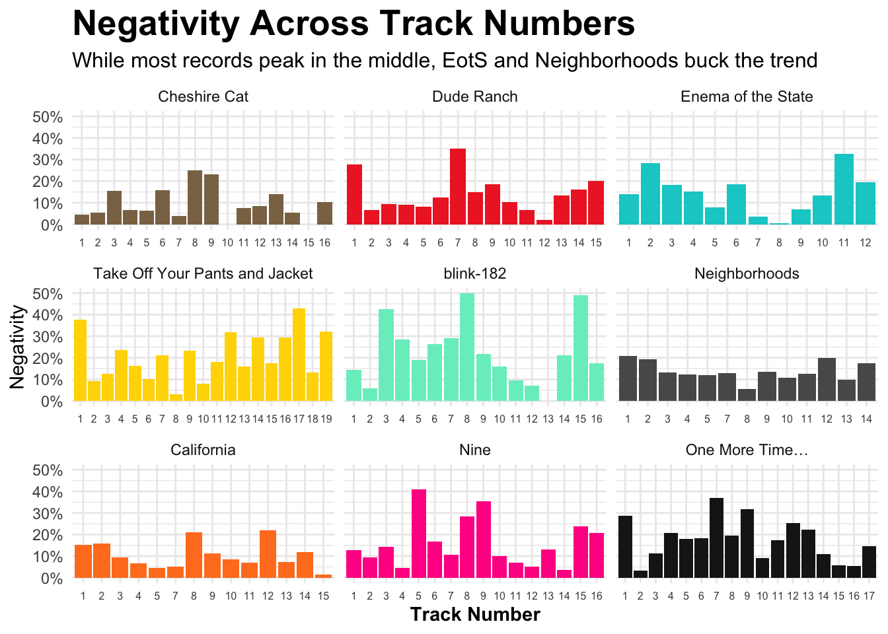
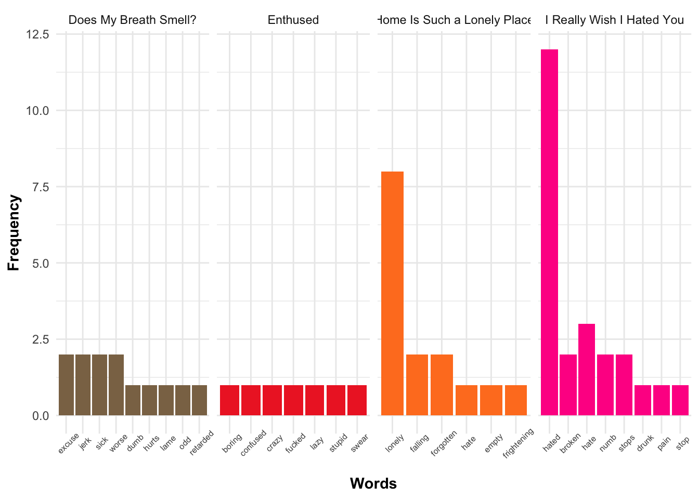

# load and install necessary packages for notebook
pacman::p_load(here,
tidytext,
textdata,
tidyverse,
wordcloud2)
# read in dataframe and fix date, album, and track number columns
blink_df <- read_csv(here("data-exercise/data/raw-data/blink-lyrics.csv"),
col_names = TRUE,
show_col_types = FALSE) %>%
mutate(ReleaseDate = mdy(ReleaseDate),
TrackNumber = as.factor(TrackNumber),
Album = factor(Album,
levels = c("Cheshire Cat",
"Dude Ranch",
"Enema of the State",
"Take Off Your Pants and Jacket",
"blink-182",
"Neighborhoods",
"California",
"Nine",
"One More Time…")))Complex Data Exercise
Introduction and Setup
For this exercise we’re going to examine some raw text data in the form of song lyrics. Specifically we’re going to be taking a look at the lyrics of the band blink-182 (which I had the pleasure of seeing on 6/24/24) and examining the sentiment and word choice of their lyrics across years, albums, and songs. The lyric data has been sourced from the website Genius – which allows both artists and fans alike to crowd source song lyrics. As a result some minor stylistic differences between songs may be present.

Data Import and Type Conversions
Tokenizing Lyrics by Album and Joining Sentiment Data
# tokenizing lyrics and joining sentiment values and classifications
# collect counts by album
album_sentiments <- blink_df %>%
unnest_tokens(word, Lyrics) %>%
anti_join(stop_words, join_by(word)) %>%
inner_join(get_sentiments("afinn"), join_by(word)) %>%
mutate(class = case_when(value < 0 ~ "negative",
value > 0 ~ "positive",
.default = "neutral")) %>%
count(Album, class, sort = TRUE) %>%
pivot_wider(names_from = class, values_from = n)
# tokenizing lyrics and collecting total non-stopwords by album
album_total_words <- blink_df %>%
unnest_tokens(word, Lyrics) %>%
anti_join(stop_words, join_by(word)) %>%
count(Album, word) %>%
summarize(total = sum(n), .by = Album)
# joining sentiment word counts with total word counts by album
#creating positivity/negative ratios per album
album_ratios <- album_sentiments %>%
inner_join(album_total_words, join_by(Album)) %>%
mutate(positivity = positive/total,
negativity = negative/total)Tokenizing Lyrics by Song and Joining Sentiment Data
# tokenizing lyrics and joining sentiment values and classifications
# collect counts by song
song_sentiments <- blink_df %>%
unnest_tokens(word, Lyrics) %>%
anti_join(stop_words, join_by(word)) %>%
inner_join(get_sentiments("afinn"), join_by(word)) %>%
mutate(class = case_when(value < 0 ~ "negative",
value > 0 ~ "positive",
.default = "neutral")) %>%
count(Album, SongName, TrackNumber, class, sort = TRUE) %>%
pivot_wider(names_from = class, values_from = n, values_fill = 0)
# tokenizing lyrics and collecting total non-stopwords by song
song_total_words <- blink_df %>%
unnest_tokens(word, Lyrics) %>%
anti_join(stop_words, join_by(word)) %>%
count(Album, SongName, word) %>%
group_by(Album, SongName) %>%
summarize(total = sum(n))`summarise()` has grouped output by 'Album'. You can override using the
`.groups` argument.# joining sentiment word counts with total word counts by song
# creating positivity/negative ratios per song
song_neg_pos <- song_sentiments %>%
inner_join(song_total_words, join_by(SongName)) %>%
mutate(positivity = positive/total,
negativity = negative/total,
Album = Album.x) %>%
select(Album, SongName, TrackNumber, negativity, positivity)Exploring and Visualizing the Data
Sentiment Over Time
# plot positivity and negativity throughout the years
blink_df %>%
select(Album, ReleaseDate) %>%
summarise(ReleaseDate = max(ReleaseDate), .by = Album) %>%
# rejoin with original dataframe for release years
inner_join(album_ratios, join_by(Album)) %>%
mutate(selftitled = as.factor(case_when(Album == "blink-182" ~ "yes",
.default = "no"))) %>%
select(-positive, -negative, -total) %>%
pivot_longer(cols = 3:4,
names_to = "type",
values_to = "value") %>%
ggplot(aes(x = ReleaseDate, y = value, colour = type)) +
geom_point(aes(shape = selftitled), size = 4) +
scale_shape_manual(values = c(20, 18)) +
geom_line() +
facet_wrap(~type, ncol = 1, scales = "free_y") +
expand_limits(y = 0) +
scale_y_continuous(labels = scales::percent, ) +
scale_x_date(date_breaks = "2 years", date_labels = "'%y") +
scale_color_discrete(type = c("deeppink1", "aquamarine2")) +
theme_minimal() +
xlab("Release Year") + ylab(NULL) +
labs(title = "Blink-182 Sentiment Through The Years") +
theme(plot.title = element_text(face = "bold", size = 20),
legend.position = "none",
axis.title.x = element_text(face = "bold"),
axis.text.x = element_text(angle = 45)) 
Examining the lyrical sentiment of blink-182 over the years there is a clear bias towards more negative sentiment throughout the entirety of their career. Looking a little more closely we’ll notice that their self-title album (highlighted with a diamond data point) represented their most negative record by a significant amount while also being among one of their least positive albums. It’s also worth noting the historical context of the period, as this would also be their first full album following the terror attacks of 9/11. Subsequent releases in later years would be substantially less negative.
Top Songs by Negativity
# plot top negative songs color coded by album
song_neg_pos %>%
select(SongName, Album, negativity) %>%
slice_max(negativity, n = 10) %>%
ggplot(aes(negativity, reorder(SongName, negativity), fill = Album)) +
geom_col() +
scale_x_continuous(labels = scales::percent) +
scale_fill_discrete(type = c("firebrick2",
"cyan3",
"gold",
"aquamarine2",
"deeppink1",
"grey10")) +
theme_minimal() +
xlab("Negativity") + ylab(NULL) +
labs(title = "Most Negative Songs") +
theme(plot.title = element_text(hjust = -0.35, face = "bold", size = 20),
legend.position = "none",
axis.title.x = element_text(face = "bold"))
Given what was previously seen with the time series data it comes as no surprise that 3 of the top 10 songs by negativity throughout blink-182’s career were featured on their self-title album. All 3 of which are among the top 4 most negative songs across all records.
Examining Negativity Journeys Within Albums
# plot negativity progress through each album by song
song_neg_pos %>%
ggplot(aes(TrackNumber, negativity, fill = Album)) +
geom_col(show.legend = FALSE) +
facet_wrap(~Album, ncol = 3, scales = "free_x") +
scale_y_continuous(labels = scales::percent) +
theme_minimal() +
xlab("Track Number") + ylab("Negativity") +
scale_fill_discrete(type = c("burlywood4",
"firebrick2",
"cyan3",
"gold",
"aquamarine2",
"grey35",
"chocolate1",
"deeppink1",
"grey10")) +
labs(title = "Negativity Across Track Numbers",
subtitle = "While most records peak in the middle, EotS and Neighborhoods buck the trend") +
theme(plot.title = element_text(face = "bold", size = 20),
plot.subtitle = element_text(size = 12),
legend.position = "none",
axis.title.x = element_text(face = "bold"),
axis.text.x = element_text(size = 6, angle = 0))
With track listing orders we can plot the negativity journeys within each major record release. In general we can see a trend towards burying peak negativity in the middle of the record. Dude Ranch, blink-182, and Nine all demonstrate this well. With songs like Enthused, The Fallen Interlude, and I Really Wish I Hated You all peaking towards the middle of the track list. Even lesser negative albums like Cheshire Cat and California feature their most negative tracks (Does My Breath Smell? and Home is Such a Lonely Place, respectively) at track number 8.
# create barcharts for negative word counts in middle track listings
blink_df %>%
unnest_tokens(word, Lyrics) %>%
anti_join(stop_words, join_by(word)) %>%
inner_join(get_sentiments("afinn"), join_by(word)) %>%
mutate(class = case_when(value < 0 ~ "negative",
value > 0 ~ "positive",
.default = "neutral")) %>%
count(Album, SongName, word, class, sort = TRUE) %>%
filter(class == "negative") %>%
select(-class) %>%
filter(SongName == "Enthused" |
SongName == "Does My Breath Smell?" |
SongName == "Home Is Such a Lonely Place" |
SongName == "I Really Wish I Hated You") %>%
ggplot(aes(y = n, x = reorder(word, -n), fill = Album)) +
geom_col() +
facet_wrap(~SongName, scales = "free_x", ncol = 4) +
theme_minimal() +
xlab("Words") + ylab("Frequency") +
scale_fill_discrete(type = c("burlywood4",
"firebrick2",
"chocolate1",
"deeppink1")) +
labs() +
theme(plot.title = element_text(face = "bold", size = 20),
plot.subtitle = element_text(size = 12),
legend.position = "none",
axis.title.x = element_text(face = "bold"),
axis.title.y = element_text(face = "bold"),
axis.text.x = element_text(size = 6, angle = 45))
Word Clouds
While interactive word clouds aren’t the best option for visualizing with a great deal of intepretability and accuracy, they can be useful for surfacing a handful of the greatest values while being graphically pleasing and information dense.
# plot negative word cloud
blink_df %>%
unnest_tokens(word, Lyrics) %>%
anti_join(stop_words, join_by(word)) %>%
inner_join(get_sentiments("afinn"), join_by(word)) %>%
mutate(class = case_when(value < 0 ~ "negative",
value > 0 ~ "positive",
.default = "neutral")) %>%
count(word, class, sort = TRUE) %>%
filter(class == "negative") %>%
select(-class) %>%
slice_max(n, n = 300) %>%
with(wordcloud2(data = ., fontFamily = "sans-serif", color = "random-dark"))# plot positive word cloud
blink_df %>%
unnest_tokens(word, Lyrics) %>%
anti_join(stop_words, join_by(word)) %>%
inner_join(get_sentiments("afinn"), join_by(word)) %>%
mutate(class = case_when(value < 0 ~ "negative",
value > 0 ~ "positive",
.default = "neutral")) %>%
count(word, class, sort = TRUE) %>%
filter(class == "positive") %>%
select(-class) %>%
slice_max(n, n = 300) %>%
with(wordcloud2(data = ., size = 2, fontFamily = "sans-serif", color = "random-dark"))The sheer quantity of negative words visualized in the above word cloud, when compared to the positive words, makes clear the disparity in sentiment classes. Additionally these word clouds make it quite a bit easier to judge the intensity of the words ourselves be laying many more out than can comfortably fit on a traditional plot. It’s clear to see that the word ‘love’ is doing a lot of heavy lifting on the positive sentiment side, while many violent or vulgar words dominate the negative sentiment side.
N-Gram Cloud and All the Small Things
# plot ngram cloud
blink_df %>%
unnest_tokens(ngram, Lyrics, token = "ngrams", n = 3) %>%
count(ngram, sort = TRUE) %>%
slice_max(n, n = 200) %>%
with(wordcloud2(data = ., shape = "star", fontFamily = "sans-serif", color = "random-dark"))Finally we can instead reinterpret the tokenization process to consider ngrams of 3-words rather than individual words. We’ve limited the above word cloud to only 200 ngram combinations, but it’s clear to see that some iconic onomatopeias still stand as a lasting linguistic legacy for the band.